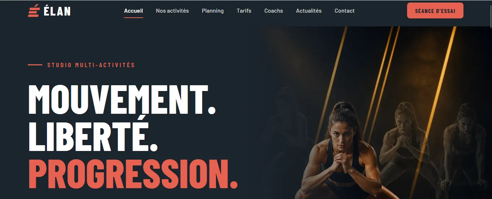
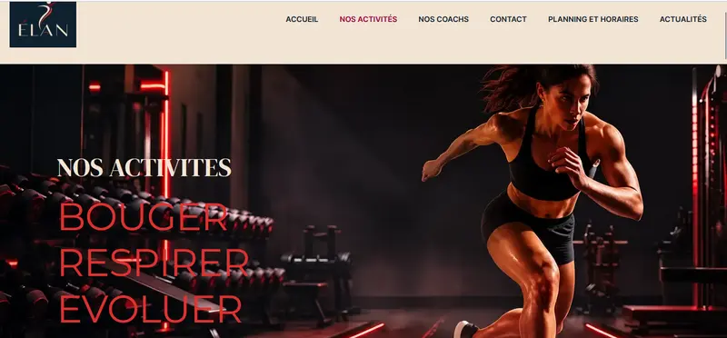
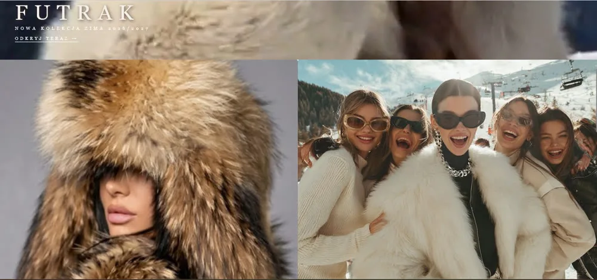
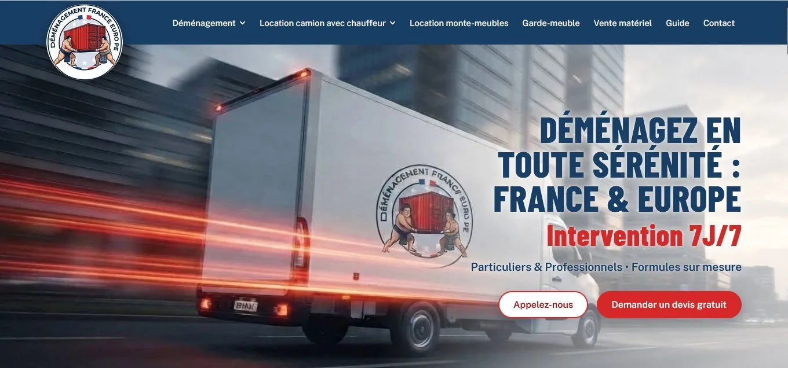
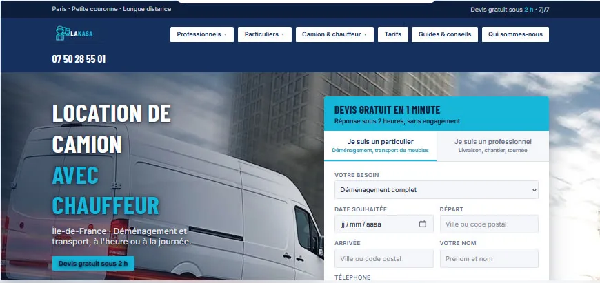

Élan · Site créé avec l'IA
Site complet d'une salle de sport, conçu et piloté avec l'IA : 8 pages, versions ordinateur et mobile.
VOIR LE PROJET →
SLAVE HAFTA
Ma marque de mode inspirée de la broderie slave : site codé à la main, visuels créés avec l'IA et réseaux sociaux.
VOIR LE PROJET →
Studio Élan
Salle de sport : yoga, Pilates, boxe, HIIT. Charte « Énergie urbaine ».
VOIR LE PROJET →
FUTRAK
Marque d'accessoires d'hiver en fourrure : site e-commerce, collection hiver 2026/2027.
VOIR LE PROJET →
PolskaVoyage
Site créé avec l'IA pour découvrir la Pologne : Cracovie, Varsovie, Zakopane, gastronomie et hôtels.
VOIR LE PROJET →
HDJ Déménagements
Site France – Europe : accueil, formules, camions, services et guide.
VOIR LE PROJET →
camion-avec-chauffeur.fr
Audit SEO, nouvelle arborescence et stratégie d'acquisition pour un loueur de camion avec chauffeur.
VOIR LE PROJET →
Le Comptoir Vert
Épicerie bio en vrac : site one page sous WordPress, horaires, produits et partenaires locaux.
VOIR LE PROJET →
Space Game Jam 99
Stratégie de brand content pour un événement de la Fondation de l'Espace : big idea, personas et plan éditorial.
VOIR LE PROJET →